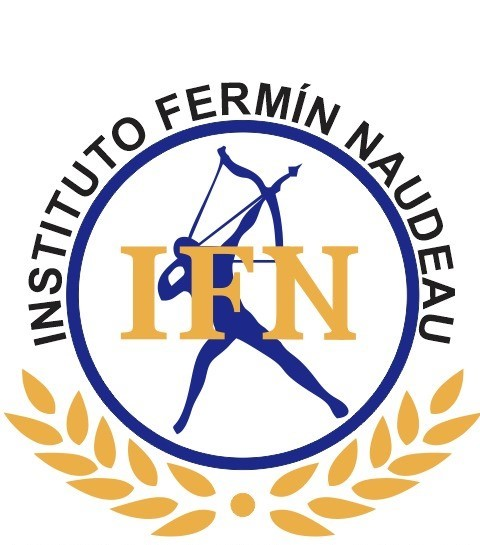

Ingresa tu código estudiantil para continuar.
Este laboratorio estará disponible próximamente.
En el laboratorio anterior reprodujiste audio y video. Ahora aprenderás a mostrar otra página web completa dentro de la tuya: un artículo de Wikipedia, un mapa, un video de YouTube… Para eso existe <iframe> (del inglés inline frame, "marco en línea").
<iframe> abre una "ventana" dentro de tu página y carga en ella la dirección que indiques en el atributo src. A diferencia de <img> o <source>, sí lleva etiqueta de cierre </iframe>, aunque no escribas nada entre las dos. Para que la dirección realmente cargue, debe ser una URL absoluta que empiece con https://.
Cada iframe debe llevar un title que describa lo que contiene. Es el equivalente del alt de las imágenes: un lector de pantalla lo anuncia para que una persona con discapacidad visual sepa qué hay dentro del marco.
Igual que con <video>, width y height fijan el tamaño del marco en píxeles. Si no los escribes, el navegador usa un tamaño pequeño por defecto (300 × 150) y casi no se ve el contenido.
Un iframe descarga una página completa, y eso hace más lenta la tuya. Con loading="lazy" el navegador espera a que el marco esté cerca de la pantalla antes de cargarlo, así tu página abre más rápido.
La forma más común de usar un iframe es incrustar un video de YouTube. Aquí hay un detalle importante: el enlace normal del video (youtube.com/watch?v=…) no funciona dentro de un iframe. Debes usar la dirección de insertar, que lleva /embed/ seguido del código del video. En YouTube la encuentras en Compartir → Insertar.
allowfullscreen es un atributo booleano (igual que loop y muted del Laboratorio 6): no lleva valor, con escribirlo ya queda activado y permite ver el video en pantalla completa.
<video> reproduce un archivo de video (un .mp4 cuya dirección directa conoces). <iframe> incrusta el reproductor o la página completa de otro servicio, como YouTube, con sus propios botones, anuncios y recomendaciones.
Algunos sitios (Google, Facebook, bancos…) prohíben que su página se muestre dentro de un iframe; verás un recuadro gris que dice que "rechazó la conexión". Wikipedia y los videos de YouTube con /embed/ sí lo permiten. Además, incrusta solo sitios en los que confíes: un iframe carga contenido que tú no controlas.
https://es.wikipedia.org/wiki/HTML para la página web y https://www.youtube.com/embed/jNQXAC9IVRw para el video. Las verás también en el checklist junto al editor, así que no necesitas salir del portal a buscar nada.Antes de iniciar el laboratorio, vuelve a escribir las etiquetas que aprendiste en los Laboratorios 1 a 6. No se califican en este momento; son solo práctica y preparación. Si te equivocas en una etiqueta, la práctica se reinicia por completo.
Practica la etiqueta <iframe> y sus atributos (src, title, width, height, loading, allowfullscreen) que vas a usar en el laboratorio. Después de esta práctica comenzará el laboratorio calificable. Si te equivocas en una etiqueta, la práctica se reinicia por completo.
Este laboratorio debe desarrollarse únicamente dentro del Portal IFN.
Mientras el laboratorio esté activo:
El editor tiene copiar, pegar, cortar y clic derecho deshabilitados. Todas las acciones serán registradas automáticamente.
Podrás salir únicamente después de presionar "Enviar laboratorio". Una vez enviado, no podrás modificarlo: solo tu docente puede habilitar un reenvío.
Tu laboratorio fue entregado y está pendiente de calificación por tu docente. Vuelve más tarde para ver tu nota.
Nota final (escala 1.0 – 5.0)
| Criterio | Puntaje |
|---|
Curso HTML - Grupo Base
Laboratorio 7
Tu docente habilitó un reenvío para este laboratorio. Corrige tu código y vuelve a enviarlo.
Has entregado correctamente tu Laboratorio 7. Tu código fue analizado automáticamente.
Nota final (escala 1.0 – 5.0)
El Proyecto Final de tu curso ya se actualizó con esta primera página. Puedes seguir trabajando en él libremente cuando quieras.
—
¿Está seguro de enviar el laboratorio? Una vez enviado no podrás modificarlo ni volver a enviarlo por tu cuenta.
Tu docente te habilitó para omitir la práctica obligatoria. Pasarás directo al laboratorio calificable.